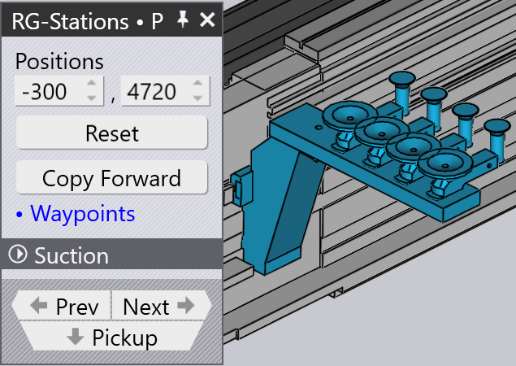

路径点
概述
BendMaster 的每次移动都由 waypoints 组成， 这些路径点依次通过。移动的所有路径点由 TecZone 确定，但大多数可以调整。与 弯曲过程中的跟踪直接相关的点无法更改。 用于控制路径点的各种设置如下所示：
-
更改路径点的位置
-
插入新路径点或删除现有路径点
-
调整运动属性，如速度和插补
-
在所需位置添加新路径点
访问 Waypoints 面板：
-
直接点击机器人导轨
-
从拾取面板、弯曲面板、重新抓取面板 或放置面板点击 Waypoints 链接。
-
点击任何 RG-Stations 面板中的路径点链接



Waypoints 面板

旁边显示了一个典型的路径点面板：
-
Phase 滑块显示路径点的逐步移动。每个 阶段反映特定的机器人操作，如拾取、弯曲、重新抓取和放置。
-
使用 Display 选项查看：
-
grip point
-
wrist point
-
robot axes。
-
-
显示并可以编辑腕部或夹持器的位置和角度。如果 选择了机器人轴，则显示并可以编辑机器人轴值。
-
黄色轨迹显示从前一步到当前步，以及从当前步 到下一步的路径（见下图）。3 个小三角形表示 机器人（腕部或夹持器）的局部 X 和 Y 坐标。
-
Simulate 滑块用于将模拟从 前一阶段移动到下一阶段。如果位于中间位置，则为 我们正在编辑的实际阶段。
-
Interpolate 设置用于在 线性插补和轴向插补之间切换。
-
Speed 和 Rounding 设置用于 编辑此步骤的速度和精度设置。
-
Regrip stations 字段用于沿其轴更改重新抓取工位的位置。
-
Insert 选项用于通过输入新 值创建新路径点。新添加的路径点可以通过 Remove 选项删除。
-
使用 Prev 和 Next 按钮转到 下一步或上一步（或者您也可以使用左右箭头键）。 点击 Next 按钮将显示阶段中的每一步。 在阶段结束时，将显示下一个相应的路径点面板。
路径点的属性
根据过程的状态，每个路径点都被赋予一组属性， 涉及插补类型、速度和移动精度。 如果需要，可以更改这些属性。
这些设置在路径点面板的高级部分中控制。
| Interpolate 类型 | 说明 |
|---|---|
Linear |
TCP 沿路径的线性移动 |
Axis |
从起始位置到结束位置的移动 尽可能快，不考虑路径。+ 没有 TCP 线性移动。 |
| Speed 类型 | 说明 |
|---|---|
Max. |
最大速度 |
Fast |
最大速度的 75% |
Medium |
最大速度的 50% |
Reduced |
最大速度的 30% |
Slow |
最大速度的 20% |
| Rounding 类型 | 说明 |
|---|---|
Max. |
圆弧过渡从较短路径长度的 50% 开始 |
Large |
圆弧过渡从较短路径长度的 35% 开始 |
Medium |
圆弧过渡从较短路径长度的 20% 开始 |
Reduced |
圆弧过渡从较短路径长度的 10% 开始 |
Fine |
圆弧过渡从较短路径长度的 5% 开始 |
Exact |
精确接近校准点而不重叠 |

-
路径点与端点之间的路径长度
-
执行长度
-
起点与路径点之间的路径长度
-
路径点 3（端点）
-
路径点 2（圆弧过渡点）
-
路径点 1（起点）
显示 waypoints
当弯曲零件装配好后，所有路径点都会自动计算 每个移动阶段。这些点可以逐阶段模拟，并带有 相应的说明。

下图显示了第一次弯曲操作的路径点阶段（侧视图）：

修改 waypoints
如果需要，可以更改路径点的位置，例如，防止越过 轴线。
在与碰撞避免有关的其他方面，可以消除不需要的路径点 或添加新的路径点。
-
当更改现有路径点位置时，TecZone 会显示警告消息。 点击 OK 继续更改路径点。

-
点击 Insert 按钮将添加新路径点。


-
新添加的路径点在阶段名称中用 +1、+2 等表示，如下所示：

模拟 waypoints
默认情况下，simulate 滑块位于中间位置。 使用此滑块可无缝模拟机器人从一个路径点到另一个路径点的移动。